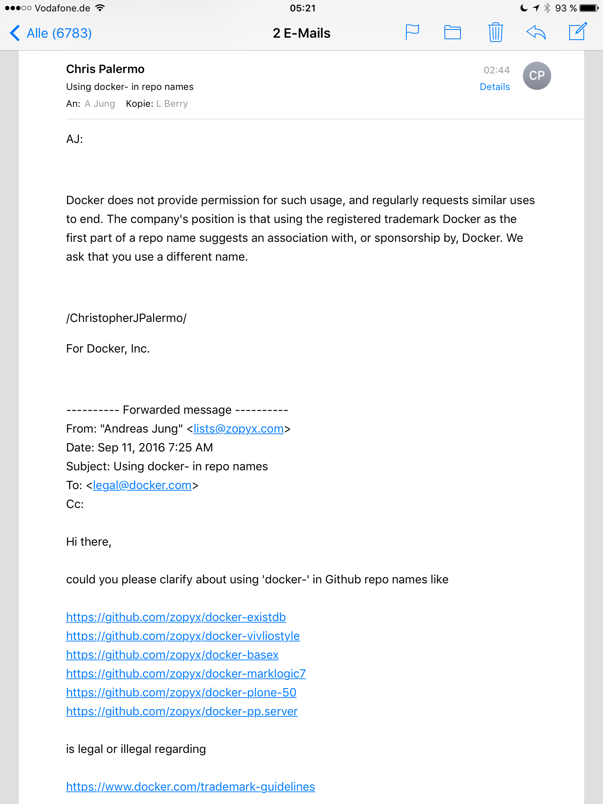

Don't use "docker" in Github repo names or as Twitter handles
The trademark guidlines of Docker Inc. for protecting the trademarks are dangerous and harmful to the open-source community around Docker.
In particular you are not allowed to use
- repository names for your open-source projects starting with 'docker'
- use 'docker' as part of a Twitter names like @dockersucks, @dockerfan or @docker-usergroup-nyc
- ....
I asked Docker Inc. about using 'docker-' as part of some of my repository projects on Github.
So here is there answer:

So what does this mean?
You are subject to be contacted the Docker Inc. for renaming or removing your project.
In the worst case Docker Inc. can sue you.
To make it clear: every company has a right to defend the trademarks and copyrights - no exception.
However a company like Docker Inc. that is driven and backed by a huge open-source community has certain obligations regarding the fair-use of trademarks by the community.
The current Docker trademark policy is an asshole policy:
Brought to the point: We are Docker Inc, we are the kings. You (the community)....we don't care about you.
How can Docker Inc. get out of this problem:
- relax the policy for open-source project regarding repository names, social media names etc. for open-source usage of Docker technology
- allow the usage of 'docker' in domain names for open-source in general e.g. for usergroups etc. (any person should be allowed to ask 'docker' as part of domain name for non-commercial purposes).
We had the same discussions with Zope Corporation 15 years ago regarding trademarks etc. around the term Zope. In the end Zope Corporation moved most of the copyrights and trademarks into the Zope Foundation and established a fair-use policy that worked for the years. The same is true for other entities holding copyrights and trademarks like the Plone project with its legal entity the Plone Foundation.
Copyright and trademarks vs. open-source community is not a contradiction. The last decade and longer showed that there is reasonable way to deal with commercial interests side by side with community interests.
So Docker Inc play nice and fair with the people that made you what you are.
Clarification: Docker Inc. did not ask me to take down or rename my repositories. As you can see from the screenshot I asked Docker Inc for a clarification on this issue and the answer is shown above.